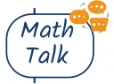
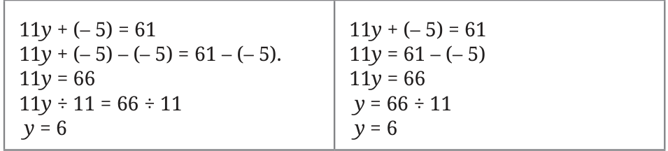
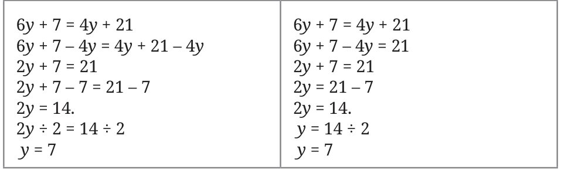
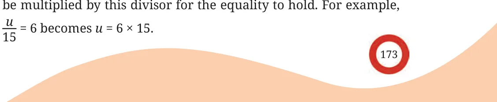

- Solve these equations and check the solutions.
- \(3x - 10 = 35\)
- \(5s = 3s\)
- \(3u - 7 = 2u + 3\)
- \(4(m + 6) - 8 = 2m - 4\)
- \(\frac{u}{15} = 6\)

- Frame an equation that has no solution.
[Hint: 4 more than a number, and 5 more than a number can never be equal!]
The procedure to systematically solve an equation can be made efficient if we make an observation. Consider the equation \(11y + (-5) = 61\), which we solved. As the first step, we subtracted \(-5\) from both sides to remove the term \(-5\).
\(11y + (-5) - (-5) = 61 - (-5)\).
Since this action removes the term \(-5\) from the LHS, we could have written this step as:
\(11y = 61 - (-5)\).
Note that we could also have arrived at this step by seeing addition and subtraction as inverse operations, as in the case of Example 1. Similarly, when we had \(11y = 66\), we divided both sides by 11 to remove the factor 11 from the LHS.
\(11y \div 11 = 66 \div 11\).
Since this action removes the factor 11 in the LHS, we can write this step as:
\(y = 66 \div 11\).
Again, we could have arrived at this by seeing multiplication and division as inverse operations, as in the case of Example 2. Let us write down both these ways of solving an equation.

Let us consider another equation that we solved earlier.

What happens in cases like \(\frac{u}{15} = 6\)? Multiplying both sides by 15 leaves only u in the LHS —
\(u = 6 \times 15\), so \(u = 90\).
Thus, we can make the following observations —
- When a term that is added or subtracted on one side of an equation is removed from that side, its additive inverse should appear as a term on the other side for the equality to hold. For example, \(2y + 7 = 21\) becomes \(2y = 21 - 7\).
- If one side of an equation is the product of two or more numbers or expressions, and we remove one of the factors, then the other side should be divided by this factor for the equality to hold. For example, \(2y = 14\) becomes \(y = 14 \div 2\).
- If one side of an equation is the quotient of two numbers or expressions, and we remove the divisor, then the other side should be multiplied by this divisor for the equality to hold. For example, \(\frac{u}{15} = 6\) becomes \(u = 6 \times 15\).
